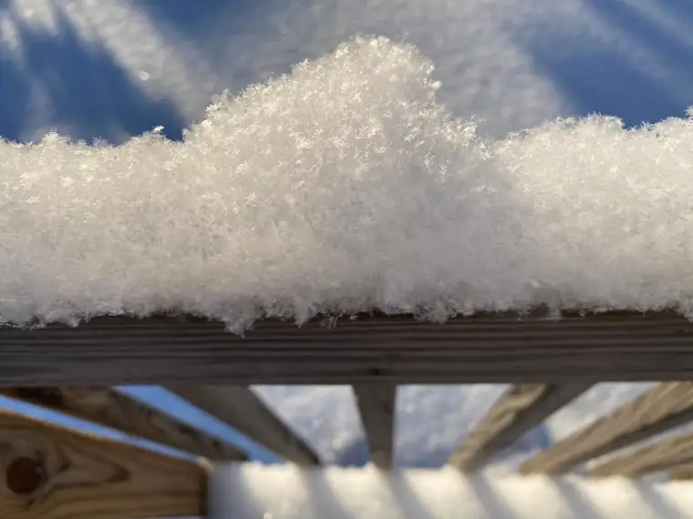
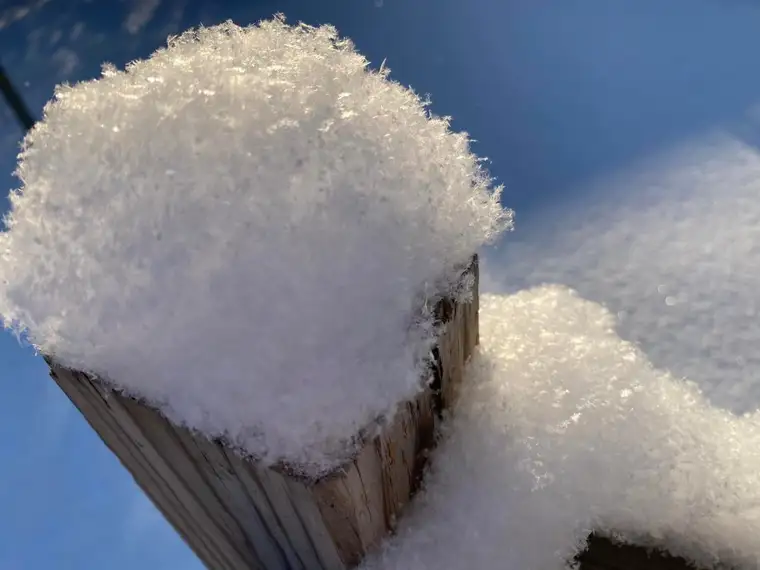
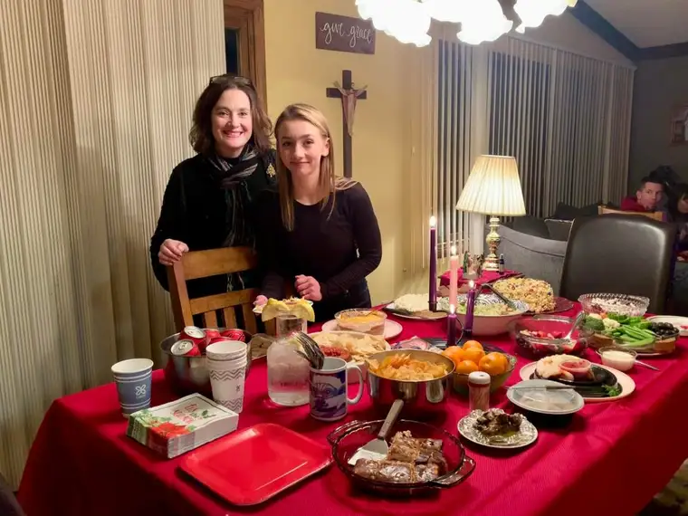
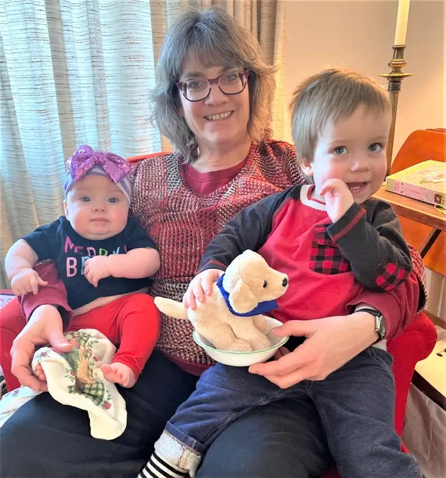
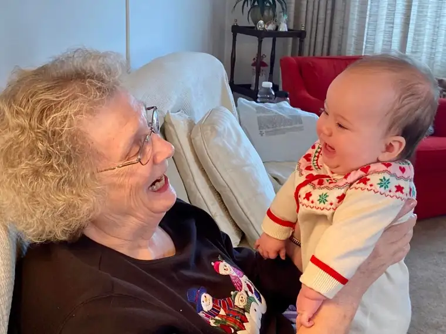
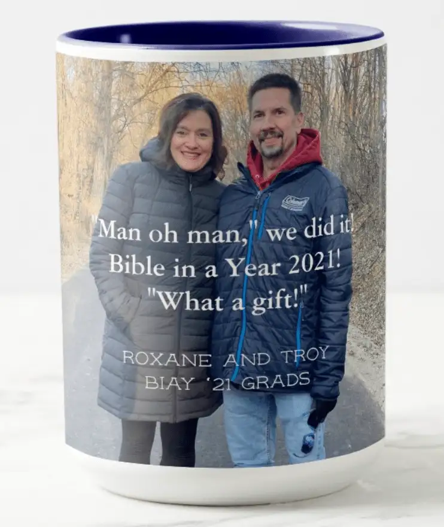
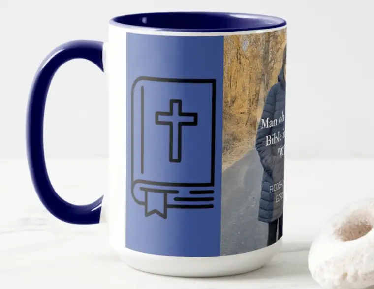
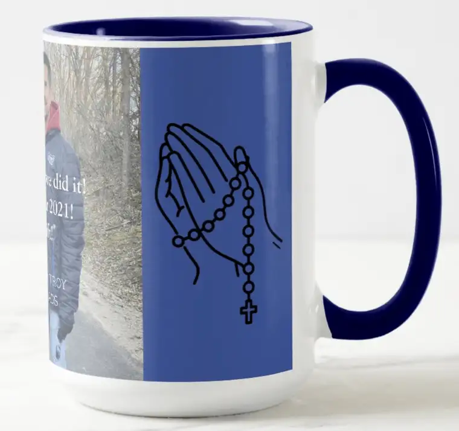
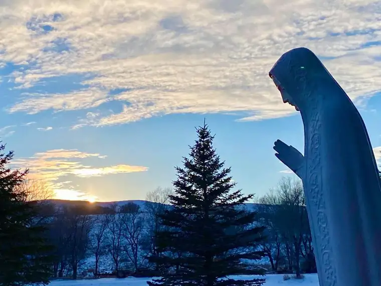

It’s the 14th year of my “One Word” post, which I started doing in 2008 with several other blogging/writing friends to begin the new year. This word arrives as the current year is coming to a close. It’s somewhat of an amalgamation of what has been, and what is hoped for. While mostly a looking ahead, the word is shaped with vision that has been made clearer through looking back.
My previous years’ words have been: 2008, Awaken; 2009, Healing; 2010, Transition; 2011, Pursue; 2012, Ready; 2013, Joy; 2014, Expectation; 2015, Receive; 2016, Trust; 2017, Hope and Health; 2018, Alive; 2019, Wisdom; 2020, Family; and 2021, Light!
And for this year, I have chosen: Presence.
“You will show me the path to life, abounding joy in your presence, and delights at your right hand forever.” (Psalm 16:11)
When I think of that word, a warmth comes over me. Inspiration for this may have been planted in mid-December when a blanketing of snow kept me from an outing I’d been planning. Not wanting to risk traveling on icy roads, I ended up staying home and catching up on Christmas preparations. But first, awed by the morning’s beauty, I paused. Driving our youngest son to school for finals week, I was taken aback by the sublimity of fresh, fluffy snow glittering in the sun.

After I grabbed my phone to capture a few moments of this exquisiteness, I lingered in that spot where I could view this gift, sipping on some candied apple cider at my kitchen table, gazing out the window at this unplanned marvel.

I allowed myself to be present, despite a small pang of regret that my trip had not happened. It became important to me to push away those feelings and allow God to enter in. It was in the present moment that he was able to bless me most richly.
Our youngest son (below, right) will be a senior halfway through 2022. It is slipping away so quickly, these years of raising and influencing our children — the privilege of a lifetime. I am so grateful. I don’t want to miss any of it. I want to be present to him.

This year also, our firstborn daughter will be deepening her commitment to her fiance’ in a July ceremony. My presence as her Mom will be important, I think, and certainly, after having Covid this year, I am grateful that I can be present. Thank you, Lord, for each day of breath, given by You.

Our middle girl will be heading back to college in our area after a pause due to restrictions. We don’t know how things will go from here, but I want to be present to her where possible, along with to our middle guy (pictured above, second to left), a freshman in another college nearby. They are out of the home now, but we don’t quit being their parents. Presence remains important. That is true as well, I think, for our firstborn, who is far away in Arizona, but occasionally still needs to know we are near in heart.
It might simply be the presence of friends at times. These are my Bismarck buddies, Sande (left) and Patti (right), whom I met for our annual Christmas lunch last week. It had been a while since we’d been in the same space. Our in-person presence to one another after so many months of separation was golden. And in 2022, Patti and I will experience the joy of sharing the book on which we collaborated with many others. I want to be present to that effort, and all those who will receive this book and, hopefully, be blessed by it.

Presence to those with whom we encounter and minister is important, and I will be watching for those opportunities wherever God calls me. But family will be first in line for my attention of presence, next to God, whose very presence is LIFE.

Our Christmas this year provided visions of the importance of presence, including those moments of meeting and loving our newest family member, Amelia Faith, granddaughter to my sister. Camille is present to both her grandkids frequently as one of their childcare-givers. They are so blessed! (And pretty cute, too, I’d say!)

My Mom, who turned 80 in 2021, has been enjoying her family’s presence too!

This life would not be nearly as meaningful, though, without the presence of my dear husband, who is truly by my side in a very real and wonderful way. In fact, this past year’s LIGHT was made even brighter through our side-by-side journeying. We grew as a couple through nightly Couples Prayer, and through the “Bible in a Year” podcast journey with Fr. Mike Schmitz. (It’s not too late to dive in for 2022! Details here on Ascension Press website.) Though we didn’t often listen to the podcast at the same time, we discussed each day’s readings together many times. This year, we are going to do it again, and try to listen together as often as possible. We want to continue being present to God and each other in 2022.
(I ordered this mug for him as a celebration of our completion of “Bible in a Year”. Its delivery was delayed but it should arrive soon. Shhhh! It’s a secret!)



I think it’s going to be a good year. We are already thanking God for the blessings he is preparing for us. God is eager to bless and love us all. We want to be present to Him and awakened to those moments when they come. And they will!

God bless all of you, and please share, if you would, your hopes and prayers for the brand-new year of 2022!